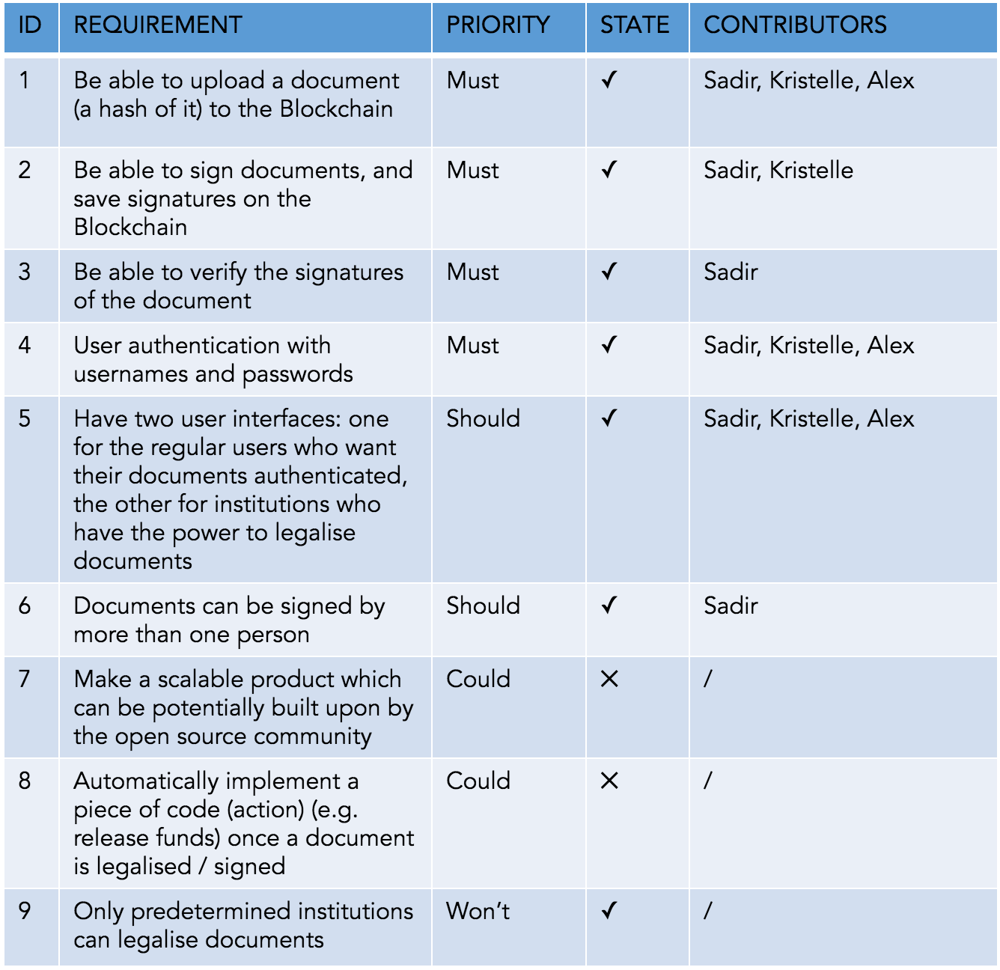
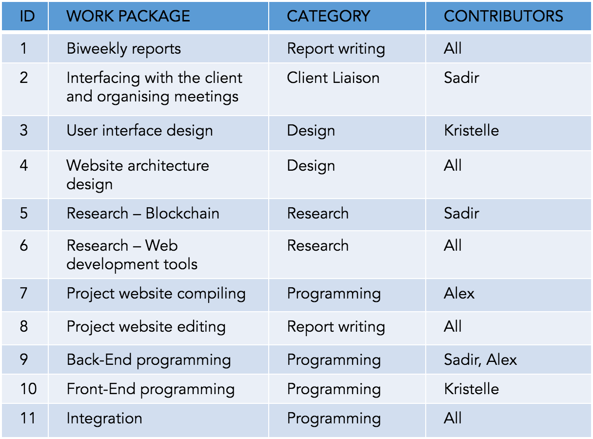
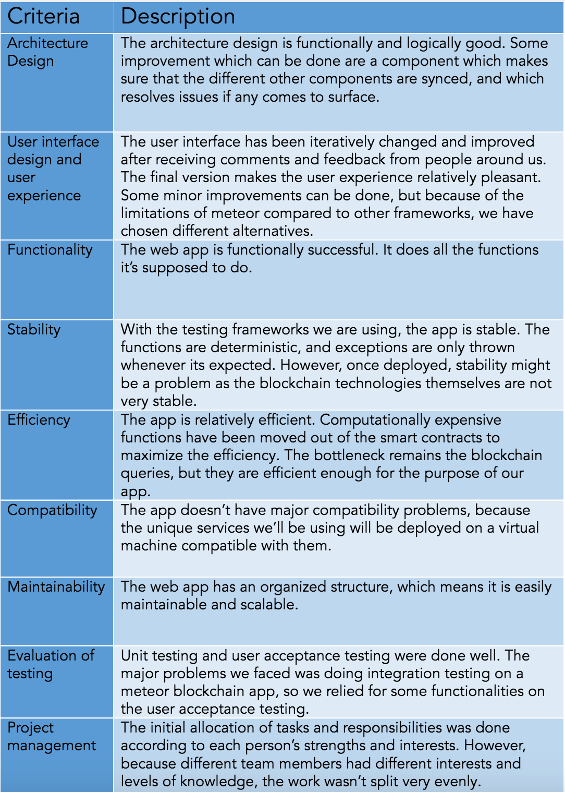

Evaluation
a. Summary of achievements
Requirements, status and contributors
Challenges and how we solved them
● Challenge #1 - Unknown technologies
Our initial project consisted of coming up with an original idea related to blockchain. Not having an idea about what blockchain is yet needing to come up with a project was really challenging. The only way to overcome this challenge was to do a lot of research, and choose the final idea a bit late in the timeline
● Challenge #2 - debugging smart contracts
Debugging smart contract solidity code was quite challenging, as it should be deployed on testRPC before any testing can be done, and printing variable values is hard in intermediate stages of the code. That’s because the technology is quite recent.
To overcome this problem, we have divided our code into very specific small functions, and the return value of each could be printed. This has helped us locate the bugs.
● Challenge #3 - Keeping the database and the blockchain is sync
This is a very hard task, and we needed to design our website architecture carefully, especially that we are dealing with sensitive data.
After failing in solving the problem, we have overcome the challenge by designing our website in way that no wrong/corrupted data can be written to the blockchain, and where decisive and important functions would check the blockchain directly without relying on the mongoDB database. In other terms, we segregated the important data from the non-important ones.
● Challenge #4 - Reducing computation in the smart contracts, as it's expensive
Computation in the smart contracts costs “gas”, which means money if the website was deployed on the the true blockchain network. To minimise the gas spending, we have moved all the expensive computation outside the smart contract (e.g. calculating the hash of a document)
● Challenge #5 – Slow querying of the blockchain/smart contract
Because asking for information from the blockchain is quite slow, and we sometimes need instant information to fill in a table with a big number of documents, we needed to find an alternative way to get data. That’s why we initially created the mongoDB database as a “proxy” to the info in the blockchain, and which be queried faster.
Incomplete features and bugs
All the main features were successfully implemented. The only functions that could have been implemented would have been email notifications, and an automatic action specified by the user which happens once the document is signed.
Some minor bugs still exist:
- Performing actions very fast might mean that some program parts are not executed
- Front end elements not being well responsive
- No type checking: e.g. A non valid email can be entered in an email field
We considered that these items were not required for our app prototype, and fixing these small bugs is relatively time consuming and wouldn't allow us to have a secure and functioning system.
Work package distribution
b. Critical evaluation of the project
c. Future work
Since we were allocated a disruptive project with a novel technology and not a lot of resources, we are aware that our app can be improved in many ways. Our future work would include:
- Fixing the bugs stated earlier
- Moving the smart contract to a real ethereum network rather than testRPC
- Deploying the web app without affecting its speed and efficiency
Later, we can move on to adding new features, such as:
- Adding notifications and an authentication system
- Making the service for money (as transactions on the blockchain are not for free)